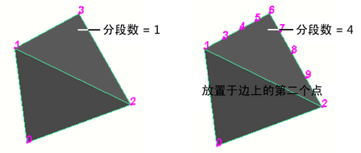
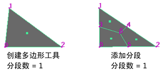
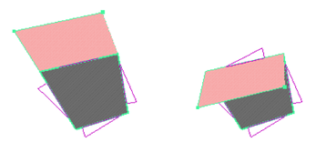
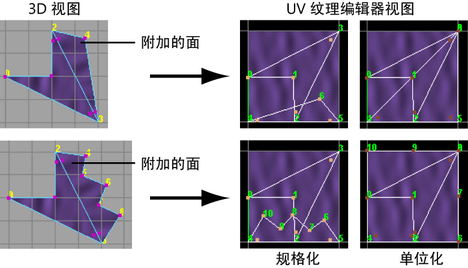

可打开这些选项。有关如何使用该工具的详细信息，请参见将多边形添加到现有网格。
可打开这些选项。有关如何使用该工具的详细信息，请参见将多边形添加到现有网格。
- 分段(Divisions)
-
指定要沿正在附加的多边形的边添加的顶点数。默认值是 1。沿这些边缘放置其他顶点以创建细分，细分使多边形有多个边。
以下示例显示细分设置为 4 的附加的多边形。
注：设置“分段”(Divisions)选项与使用细分多边形不同。“分段”(Divisions)使多边形有 n 个边。默认情况下，使用“添加分段”(Add Divisions)操作会创建新面。要新建顶点，必须仅专门对边进行细分（有关详细信息，请参见分割多边形边）。 - 旋转角度(Rotation angle)
-
该选项仅在您为附加多边形放置顶点时可用。在完成附加操作之前，使用该滑块旋转新点。
新创建的面绕选定的第一个边旋转。如果所有边都可以设定在一个铰链上，则面将绕该参考线旋转。如果您选择的边没有对齐，则面不会绕该参考线旋转。
- 保持新面为平面(Keep new faces planar)
-
默认情况下，您使用“附加到多边形工具”(Append to Polygon tool)添加的任何面与附加到的多边形网格位于同一平面。如果要在其他平面中附加多边形，请禁用“保持新面为平面”(Keep new faces planar)。
注： 当您启用或禁用“保持新面为平面”(Keep new faces planar)时，Maya 也会在创建多边形工具选项(Create Polygon Tool Option)下启用或禁用相同设置。当您退出 Maya 时，该设置将保存到首选项文件。在您更改该设置之前，它适用于所有新对象。 - 限制点数(Limit the number of points)
-
启用“将点数限制为”选项。放置“将点数限制为”选项中指定的点数后，多边形将自动关闭，您可以继续通过在视图中单击来新建多边形，而无需重新选择该工具。
- 将点数限制为(Limit points to)
-
指定附加多边形所需的顶点数。默认值是 4，这将创建四边形。如果设定为 3，该工具将创建三边多边形（三角形）。
纹理空间(Texture space)
指定如何为附加的多边形创建 UV 纹理坐标 (UV)。有下列三种设置：“无”(None)、“归一化”(Normalize)和“单位化”(Unitize)。
- 归一化(Normalize)
-
如果选择了“归一化”(Normalize)，纹理坐标将缩放，以适应范围为 0 到 1 的 UV 纹理空间，同时 UV 面的原始形状保持不变。有关详细信息，请参见归一化 UV 选项。
- 单位化(Unitize)
-
如果选择了“单位化”(Unitize)，纹理坐标将放置在范围为 0 到 1 的纹理空间的角和边界处。包含 3 个顶点的多边形将有一个三角形 UV 纹理贴图（各个边的长度相等），而包含 3 个以上顶点的多边形将有一个方形 UV 纹理贴图。
- 无(None)
-
指定不会为附加的多边形创建 UV。
